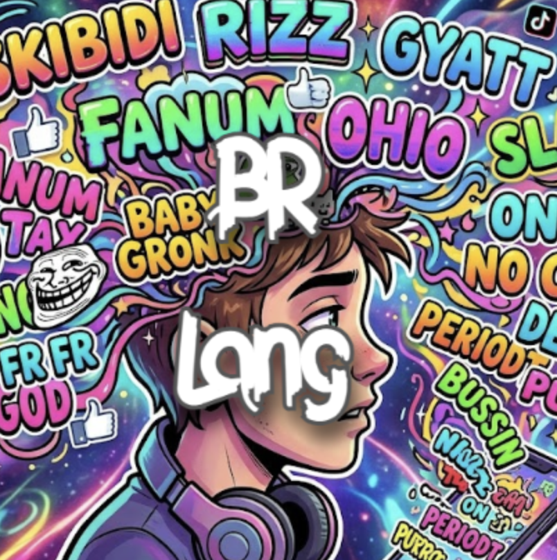

Brainrot is a programming language all about encouraging the youth to program with memes, all whilst having a robust set of tools founded on JavaScript!


aura (struct) types to organize your data.? and the mid (null) keyword.grind or iterate over collections with ease.# for length.yap("hello bruh");
lowkey x = 10;
lowkey y = 20;
lowkey sum = x + y;
lowkey product = x fanum_tax y;
lowkey power = x ** 2;
// output results
yap("Sum: ");
yap(sum);
yap("Product: ");
yap(product);
yap("Power: ");
yap(power);yap("Range loop:");
grind i with 1...5 {
yap(i);
}
yap("Collection loop:");
lowkey numbers = [10, 20, 30, 40, 50];
grind n with numbers {
yap(n);
}
yap("Repeat loop:");
run_it_back 3 {
yap("Chungus!");
}cook fizzBuzz(limit: sigma) {
grind i with 1...limit {
vibe_check i % 15 == 0 {
yap("FizzBuzz");
} caught_lackin vibe_check i % 5 == 0 {
yap("Buzz");
} caught_lackin vibe_check i % 3 == 0 {
yap("Fizz");
} caught_lackin {
yap(i);
}
}
}
// Call the function to print FizzBuzz up to 100
fizzBuzz(100);cook fibonacci(n: sigma): sigma {
vibe_check n <= 1 {
it_gave n;
}
// Reccursion to find the previous values in the sequence
it_gave fibonacci(n - 1) + fibonacci(n - 2);
}
// Finds the nth term in the Fibonacci Sequence
lowkey result = fibonacci(10);
yap("Fibonacci(10): ");
yap(result);aura Point {
x: sigma,
y: sigma
}
cook distance_from_origin(p: Point): sigma {
it_gave (p.x ** 2.0 + p.y ** 2.0) ** 0.5;
}
lowkey my_point = spawn Point(3.0, 4.0);
lowkey dist = distance_from_origin(my_point);
yap("Point x: ");
yap(my_point.x);
yap("Point y: ");
yap(my_point.y);
yap("Distance from origin: ");
yap(dist);
// Using Optionals with Auras
lowkey maybe_point = mid Point;
vibe_check maybe_point == mid Point {
yap("Initial maybe_point is mid (null)");
}
maybe_point = some my_point;
yap("Field access via optional chaining: ");
yap(maybe_point?.x ?? 0.0);